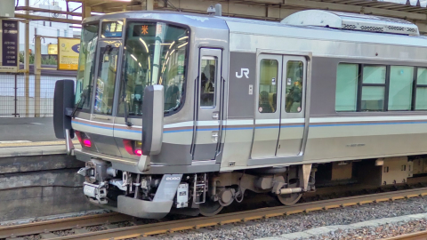

運転シミュレーターのデータ配布所

ここでは、運転シミュレーターソフトを使って遊べる路線データの公開を行っております。
PCでプレイする場合はSimple Train Simulatorが、スマートフォンでプレイする場合はSensimが必要です。あらかじめダウンロードして、お楽しみください。
パソコン版
現在2路線配布しています。プレイする際は、dataフォルダ内の「movie」,「data」,「door_open」,「door_close」,「set」,「train」,「top」,「finish」をそれぞれダウンロードしたものと置き換えてください。
スマートフォン版
現在3路線公開されています。
- 地下鉄東西線（京都） 三条京阪→御陵(50系)
50シミュレータをプレイする
スマホ版の一作目です。いつ撮影したのか残っていません。2022年の10月か11月だったと思います。東山→蹴上間の映像は交換していて、2022/12/11のものです。放送も12/11に収録しました。
- ＪＲ奈良線 普通 東福寺→六地蔵(221系)
221シミュレータをプレイする
二作目です。2022/11/20 14:05発 みやこ路快速 奈良行きにて撮影。iPhone 5で撮影
- 東京メトロ有楽町線 各停 小竹向原→和光市(東武9000系)
東武9000シミュレータ(有楽町線 小竹向原→和光市)をプレイする
三作目です。2022/12/25 17:59発 副都心線 急行 川越市行にて撮影。放送は、2022/12/26 22:40発 有楽町線 各駅停車 和光市行にて収録
- 東京メトロ副都心線 急行 小竹向原→和光市(東武9000系)
東武9000シミュレータ(副都心線 急行 小竹向原→和光市)をプレイする
有楽町線の使い回し映像です。
- ディズニーリゾートライン リゾートゲートウェイ・ステーション→リゾートゲートウェイ・ステーション(Type C)
Type C 100形(リゾートライナー)シミュレータをプレイする
五作目です。映像が従来よりきれいです。(多分)